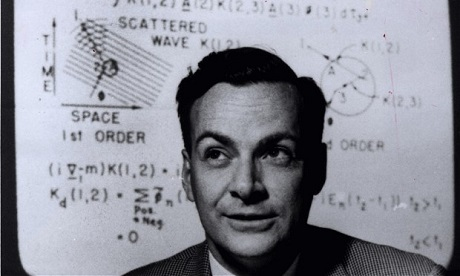
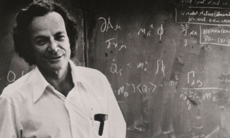
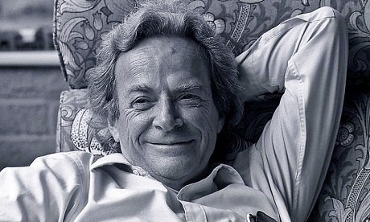

Richard Feynman
Richard Feynman was a man of incredible intellect. He had a unique and beautiful view of the world, which allowed him to dive deep into whichever subjects caught his eye throughout his life. He is responsible for inspiring thousands, and for bringing joy and wonder into even the toughest of topics with his way with words. But his story has a dark side, filled with uncertainty and regret. His involvement in the Manhatten Project was something he considered to be necessary, but it would affect him in ways he could never have guessed. He was a great man, with a life of great interest.



